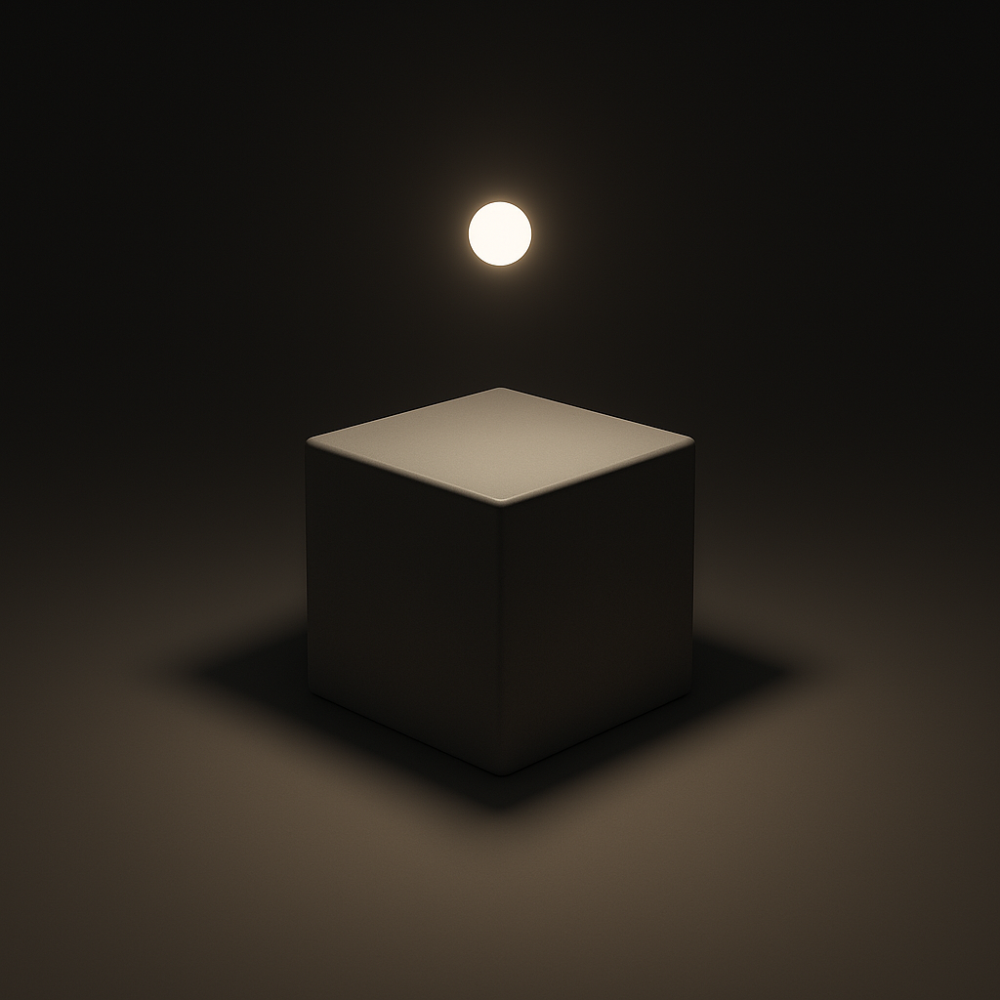
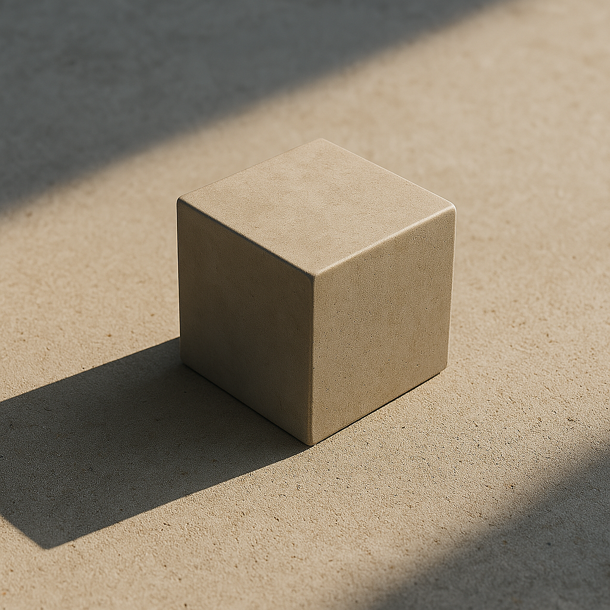
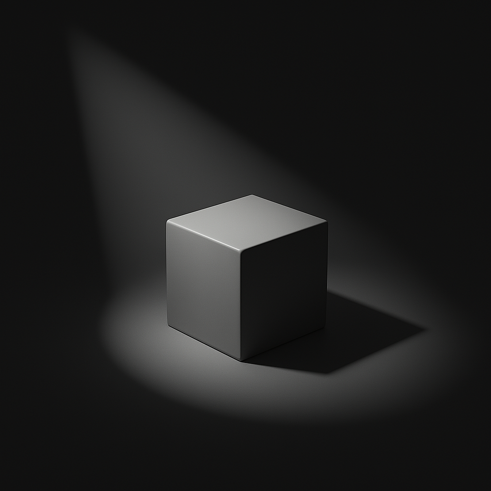
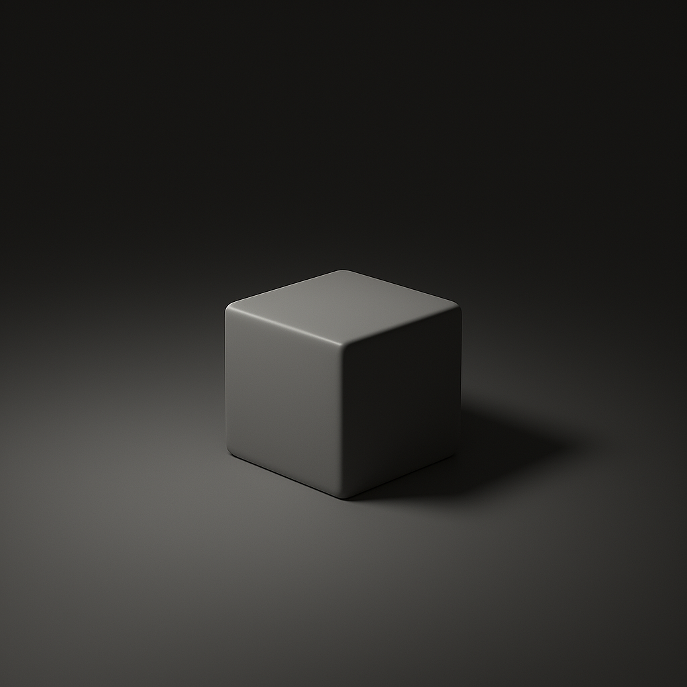

📷 Урок 6: Камера і світло
1. Камера в Blender
Камера визначає, під яким кутом і з якої точки буде відображено вашу сцену при фінальному рендері. Без камери Blender не зможе зробити зображення сцени.
Як додати камеру:
Shift + A → Camera- Камеру можна переміщувати (
G), обертати (R) як будь-який об’єкт.
- Натисніть
Numpad 0, щоб перейти у вигляд з камери.
- У панелі
N → View → Lock Camera to View, щоб зручно позиціонувати її мишею.
Додаткові налаштування камери:
- Focal Length (фокусна відстань): визначає широту огляду (як зум-об'єктив).
- Depth of Field: створення розмиття фону (ефект фокусу на певному об'єкті).
- Sensor Size: імітує розмір камери (наприклад, кінематографічна перспектива).
2. Типи джерел світла
Світло у сцені має ключову роль — воно впливає на настрій, реалістичність, тіні, яскравість і вигляд матеріалів.
- Point Light — точкове джерело, світить в усі боки.

- Sun Light — імітація сонця. Промені паралельні, незалежно від розміру об'єкта.

- Spot Light — світло в конусі. Можна створити акцент на окремому об'єкті.

- Area Light — світло від площини. Дає м'які й реалістичні тіні.

✅ Практична робота №6
Завдання: Підготуйте сцену для рендеру:
- Оберіть будь-яку попередню роботу, додайте камеру і розмістіть її так, щоб було видно об'єкти з гарного ракурсу.
- Додайте 2 джерела світла:
- Sun Light або Area Light — як основне джерело.
- Point Light — для підсвітки деталей.
- Використайте
Rendered для перевірки освітлення.